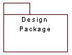

Standards:
Organizational Packages
 |
A package is a collection of classes, relationships, use-case realizations, diagrams,
and other packages; it is used to structure the design model by dividing it into smaller
parts. Organizational packages are used primarily for configuration management and
model organization. |
| Related Information: |
|
Topics
Introduction 
Organizational packages are used primarily for configuration management and model
organization.
The Organizational Packages are used to divide a large model into smaller more
manageable parts and to provide alternative view points into the model.
The Organizational Packages are used to group, layer and organize the Structural
Packages (See Standards: Structural Packages) that define the
actual pieces of the model to be implemented.
Stereotypes
The following table provides a summary description of the package stereotypes that will
be adopted. Each of these has its own standards which are described on the appropriate
linked pages.
| Stereotype |
Source |
Use |
Comment |
| None |
|
Optional |
An unspecified / unconstrained model
organizational unit. Unstereotyped packages should be treated as
though they are <<work>> packages. |
| <<dynamic>> |
Local |
Mandatory |
A package that only contains the products of
dynamic modeling. These packages mainly contain the use case realizations
developed
during Use Case Analysis and Use Case Design. |
| <<layer>> |
RUP |
Optional |
A specific way of grouping packages in a model
that are at the same level of abstraction. |
| <<model>> |
UML |
Optional |
Indicates that the package contains an entire model. Useful if
developing separate Analysis and Design models or separate application models for
application families. |
| <<view>> |
Local |
Optional |
A package that only contains diagrams.
An example of the use of views is in presenting the architecture. These packages
will contain the diagrams for inclusion in the Software Architecture Document. |
| <<work>> |
Local |
Optional |
A temporary package containing work in
progress. |
|